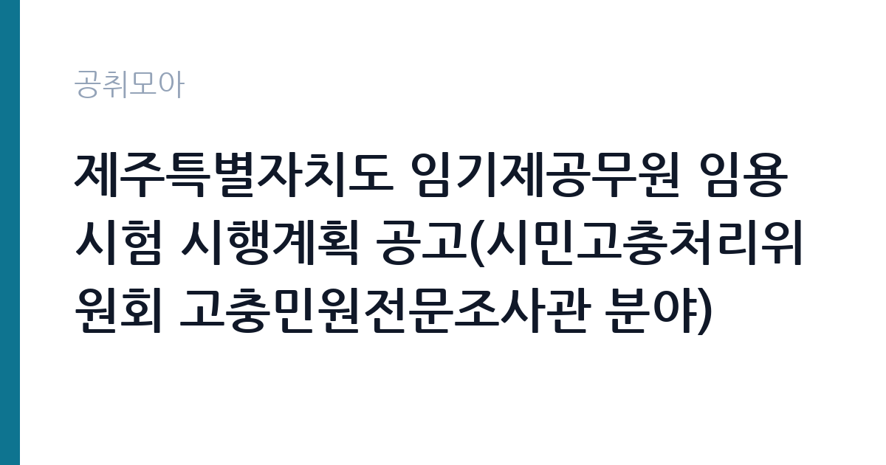

[지자체] 제주특별자치도 임기제공무원 임용시험 시행계획 공고(시민고충처리위원회 고충민원전문조사관 분야)
제주특별자치도 · 전국 · 마감 2026-10-19 (D-17) · 출처 나라일터

한눈에 보는 모집 조건
| 기관 | 제주특별자치도 |
|---|---|
| 공고명 | 제주특별자치도 임기제공무원 임용시험 시행계획 공고(시민고충처리위원회 고충민원전문조사관 분야) |
| 고용형태 | 임기제 |
| 근무지 | 전국 |
| 게시일 | 2026-10-02 |
| 마감일 | 2026-10-19 (D-17) |
지원자격, 이렇게 읽으세요
- 지방시간선택제임기제 나급(주35시간) 1명
- 접수 ~2026-10-19 마감
- 세부 조건은 원문 공고문 확인
임용분야와 응시자격 요건의 세부 내용은 원문 공고의 붙임 문서를 반드시 확인하십시오. 고충민원 조사관 자리인 만큼 행정과 법률, 감사나 조사 분야의 실무 경력을 요구하는 것이 일반적입니다. 지방시간선택제임기제 나급은 6급 상당의 직급으로, 관련 분야에서 일정 연수 이상의 경력을 쌓은 분이 대상입니다. 학위나 자격증, 경력 연수 중 어떤 조합을 인정하는지는 붙임 공고문에 상세히 나와 있으므로 본인의 경력이 조건에 맞는지 대조해 보십시오. 등기우편 접수는 마감일까지 소인분에 한하므로 발송 일정을 넉넉히 잡으셔야 합니다. 제주 근무가 전제이므로 정주 계획도 함께 세우십시오.
이 공고의 포인트
이 공고의 매력은 직무의 전문성과 사회적 의미입니다. 시민고충처리위원회는 제주도와 행정시, 출자출연기관의 고충민원을 조사하고 시정 의견표명을 할 수 있는 독립적인 권리구제 기구입니다. 2026년 상반기에는 계약직 근로계약 기간 제도 개선과 장기 민원 해결 같은 실질적인 성과를 냈다는 언론 보도도 있습니다. 조사관으로서 행정의 위법이나 부당한 처분을 바로잡는 일을 직접 하게 되므로 보람이 큰 자리입니다. 시간선택제 주 35시간 근무라 전일제보다 시간 여유가 있으며, 임기제라도 보수는 6급 상당으로 책정됩니다. 제주라는 근무지도 이 공고만의 매력입니다.
전형은 어떻게 진행되나
지방임기제공무원 채용은 서류전형과 면접시험으로 진행되는 것이 일반적입니다. 서류전형에서는 응시자격 충족 여부와 관련 경력의 적합성을 평가하며, 면접시험에서는 직무 수행 능력과 전문성, 공직 가치관을 검증합니다. 고충민원 조사관 면접에서는 실제 민원 사례를 제시하고 조사 방향을 묻는 상황 질문이 나올 수 있으니 관련 사례를 공부해 두십시오. 접수 기간이 10월 15일부터 10월 19일로 짧고 등기와 방문 접수만 가능하므로, 붙임 서류를 미리 준비해 두었다가 접수 첫날에 제출하는 것이 안전합니다. 세부 전형 방법과 일정, 합격자 발표일은 원문 공고에서 확인하십시오.
원문에서 확인한 전형 방식
제주특별자치도에서는 아래와 같이 임기제 공무원을 채용하고자 하오니 유능한 인재의 많은 응모 바랍니다. 1. 임용분야 및 인원, 응시자격요건: 붙임참조 2. 원서접수 ㅇ 접수기간 : 2026. 10. 15.(목) ~ 2026. 10. 19.(월) ㅇ 접수방법 : 등기우편(마감일까지 소인분에 한함) 및 방문접수 기타 자세한 사항은 붙임의 공고문을 참고하여 주시기 바랍니다.
이런 분께 추천해요
- 행정과 법률, 감사나 조사 분야에서 실무 경력을 쌓으신 분께 추천합니다. 민원 조사와 의견표명 업무가 경력과 직결되는 자리입니다.
- 제주 정주 의사가 있고 공공 분야 전문직으로 일하고 싶으신 분께 추천합니다. 주 35시간 시간선택제라 일과 생활의 균형을 맞추기 좋습니다.
- 옴부즈만이나 권익구제 업무에 관심이 있는 분께 추천합니다. 도민의 고충을 직접 해결하는 보람 있는 직무입니다.
지원 전 체크리스트
- 붙임 공고문의 응시자격 요건을 본인 경력과 한 항목씩 대조하십시오. 경력 연수 계산 기준일과 인정 범위 confirming이 합격의 첫 관문입니다.
- 등기우편은 마감일 소인분까지 유효하므로 10월 19일 이전에 발송하고 등기번호를 보관하십시오. 방문 접수는 접수처와 운영 시간을 미리 확인하십시오.
- 나급 임기제의 계약기간과 근무시간, 연장 가능 조건을 원문에서 확인하십시오. 임기제는 계약 기간이 정해져 있으므로 이후 계획을 함께 세우십시오.
- 경력증명서와 자격증 등 증빙 서류의 발급 소요 시간을 감안해 이번 주 안에 준비하십시오. 경력 기간이 모자라면 지원 자체가 불가능합니다.
모집 일정과 제출 타이밍
접수는 2026년 10월 15일부터 10월 19일까지 닷새간입니다. 접수 시작이 2주 앞으로 다가왔으므로 지금부터 붙임 문서의 자격 요건을 검토하고 경력증명서를 발급받아 두십시오. 서류전형과 면접 일정은 원문 공고에서 확인하시고, 면접까지 이어지는 일정을 감안해 제주 방문 계획을 세워 두는 것이 좋습니다. 임기제 면접은 직무 전문성을 깊이 묻는 경우가 많으므로 접수와 동시에 예상 질문을 정리해 두십시오. 합격자 발표 후 임용까지 신원조회 등 절차가 이어지니 전체 일정을 여유 있게 보십시오.
직무 이해하기: 지자체
고충민원전문조사관은 시민고충처리위원회에 접수된 고충민원을 조사하는 실무를 전담합니다. 제주도 조례에 따라 위원회는 도와 행정시, 산하 공공기관의 처분과 관련된 고충민원을 조사할 권한을 가집니다. 조사관은 민원인과 피민원 기관 양쪽의 주장을 듣고 관련 서류와 현장을 확인한 뒤 사실관계를 정리합니다. 조사 결과 위법이나 부당함이 확인되면 시정 의견표명이나 제도 개선 권고안을 작성합니다. 단순 민원 응대가 아니라 행정처분의 적법성을 따지는 준사법적 업무에 가까우므로 법령 해석 능력과 중립적인 판단력이 핵심 역량입니다. 2026년 상반기 계약직 근로계약 제도 개선 사례처럼 조사 결과가 도정 전체에 영향을 미치기도 합니다.
자기소개서 작성 팁
응시원서와 경력기술 성격의 서류에는 조사와 감사, 민원 처리 경험을 중심으로 적으십시오. 어떤 민원을 어떻게 조사했고 어떤 결론을 냈는지, 제도 개선으로 이어진 사례가 있다면 수치와 함께 기술하면 설득력이 높아집니다. 법령 해석이 쟁점이었던 경험과 중립성을 지켰던 일화를 구체적으로 적으십시오. 제주 지역 행정에 대한 이해도를 보여주는 것도 좋습니다. 고충민원 조사관으로서의 직업윤리와 도민 권익 보호에 대한 소신을 분명히 밝히고, 시간선택제 근무 형태에서도 조사 업무의 연속성을 어떻게 유지할 것인지 계획을 함께 적으십시오.
면접 준비 포인트
면접에서는 직무 전문성을 검증하는 사례형 질문이 중심이 됩니다. 복잡한 민원 사례를 주고 조사 계획과 쟁점 정리 방법을 물어볼 수 있으니, 접수부터 의견표명까지의 조사 절차를 단계별로 설명할 수 있게 준비하십시오. 피민원 기관의 반발이나 민원인의 과도한 요구에 어떻게 대응할 것인지 묻는 질문도 예상됩니다. 중립성과 원칙을 지키면서도 실질적인 해결을 이끌어낸 경험을 사례로 들어 답하십시오. 공직 가치관과 청렴성에 대한 질문에는 구체적인 실천 경험을 곁들이고, 제주 정주 의사와 장기 근무 의지를 분명히 밝히십시오.
급여·근무조건 읽는 법
보수는 지방공무원보수규정에 따라 연봉 하한액을 기준으로 책정되며 정확한 금액은 원문 공고문의 보수 항목에서 확인하십시오. 시간선택제임기제 나급은 6급 상당으로 주 35시간 근무 기준의 연봉이 적용됩니다. 참고로 2026년 타 지자체 공고에서는 시간선택제 주 35시간 기준으로 다급이 약 4,250만원, 라급이 약 3,745만원 수준으로 고시된 바 있어, 나급은 그 윗 구간에서 형성됩니다. 다만 기관마다 책정액이 다르므로 이 수치는 참고용으로만 보시고 원문 확인이 필수입니다. 기본급 외에 시간선택제 적용 수당과 명절휴가비, 연가보상비 지급 조건도 원문에서 함께 확인하십시오. 경쟁률과 합격선은 공개되지 않습니다.
자주 묻는 질문
- 시간선택제 나급이면 근무시간이 어떻게 됩니까?
이번 채용은 주 35시간 근무 조건입니다. 전일제 40시간보다 하루 1시간 짧게 근무하며 보수는 근무시간에 비례해 책정됩니다. 정확한 근무 형태는 원문 공고에서 확인하십시오. - 임기제는 몇 년 계약입니까?
계약기간과 연장 가능 여부는 원문 공고의 임용 조건 항목에 명시되어 있습니다. 임기제는 통상 1에서 2년 계약 후 성과에 따라 연장되므로 원문을 확인하십시오. - 제주 거주자가 아니어도 지원할 수 있습니까?
원문 발췌에 거주지 제한 언급이 없으므로 타 지역 거주자도 지원할 수 있습니다. 다만 방문 접수와 면접, 실제 근무가 모두 제주에서 이뤄지므로 정주 계획을 세우고 지원하십시오.
함께 보면 좋은 공고
[지자체] 2026년 제9회 대전광역시 동구 지방임기제공무원 채용시험 시행계획 공고(기록물관리 전문요원) — 마감 2026-10-14[지자체] 시간선택제임기제공무원[마급]보건행정 채용 공고 — 마감 2026-10-07[지자체] 2026년도 박미(1권역) 건강장수센터기간제근로자(간호사) 채용 공고 — 마감 2026-10-06출처: 나라일터 공개정보를 바탕으로 공취모아가 정리한 안내글입니다. 모집 조건·일정은 변경될 수 있으니 지원 전 반드시 원문 공고문을 확인하세요. 본 글은 정보 제공용이며 합격을 보장하지 않습니다.